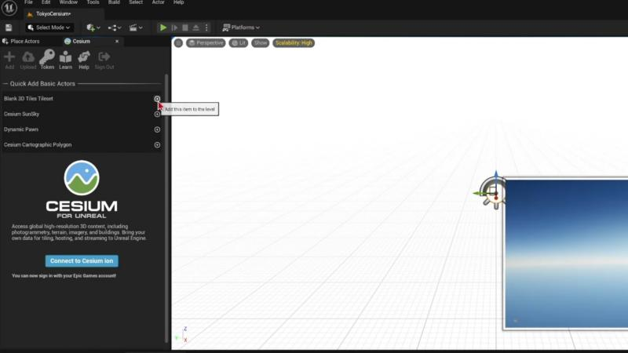
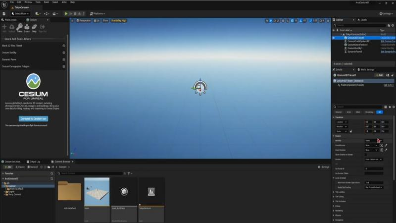
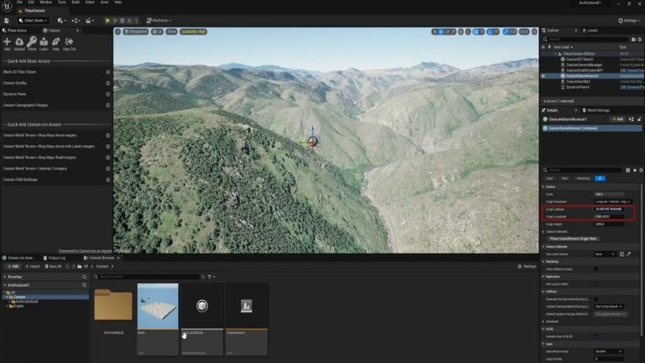
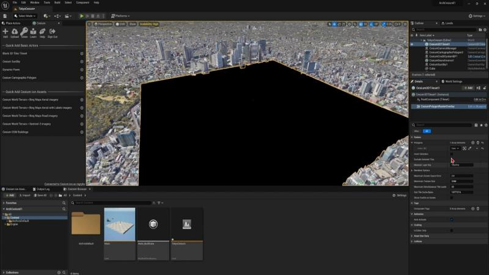
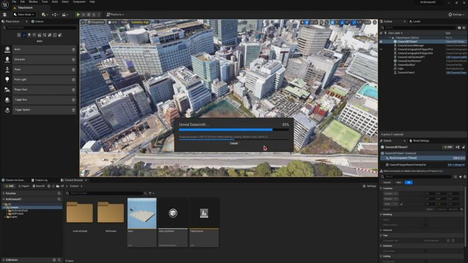
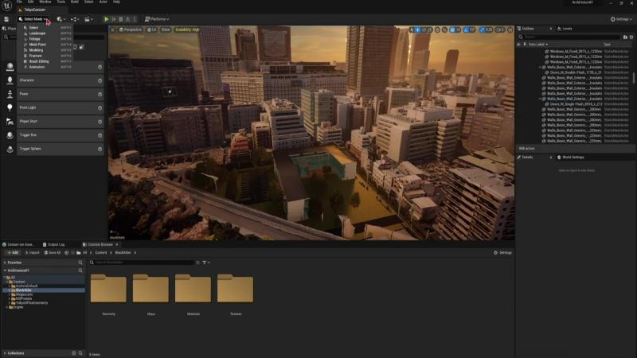

This is the foundation under a lot of what we build: satellite-accurate city context, streamed, with your own model in the right place inside it — and the whole of Unreal Engine available on top for animation, data overlays, materials and first-person walkthroughs.
Cesium is a platform for 3D geospatial data that works with 3D tilesets in both web and game engines, and that now includes Google's photorealistic tiles. The plugin for Unreal is free.
A note on versions. This workflow was recorded against Unreal 5.0/5.1, when Cesium was distributed through the Epic Marketplace and Google's photorealistic tiles had just been released. The plugin now ships for current Unreal versions and the storefront has moved, so expect the install step to look different. Everything after the install — georeferencing, clipping, Datasmith, lighting — works the same way.
1. Install, and create the accounts you'll need
Install the Cesium for Unreal plugin, then start a new project from the blank architectural template. Edit → Plugins → search Cesium → enable → restart.
You also need two accounts:
- A Cesium ion account — free for non-commercial use — to access the tiles.
- A Google Cloud account for the Map Tiles API.

Create a new empty level and save it. In the Cesium panel on the left, add Cesium SunSky, a Dynamic Pawn, and a blank 3D Tiles tileset.
First thing that looks broken but isn't: the sky is blown out. Select Cesium SunSky, find the directional light nested under it, and drop the intensity right down. The sky comes back.
2. The Google Maps API key
In Google Cloud, set up an account and agree to the terms. There is a monthly free allowance that is plenty for experimenting; a card is required for verification and you are not charged until you upgrade manually.
An API key is generated — copy it and keep it private, because it bills to your account.
The step people miss: enable the Map Tiles API. Search "map tiles" in the console, open it, and make sure it is enabled. Without this the key exists and nothing loads.

Back in Unreal: select the Cesium 3D Tileset, set source to From URL, paste the URL from the Cesium web guide, and paste your API key as the token. Then connect your Cesium ion account from the panel on the far left.
3. Go to your actual site
You have a map; it is in the wrong place. You need latitude and longitude.
Either right-click a point in Google Maps and copy the coordinates, or — for more control — use OpenStreetMap's Nominatim, zoom to the area, hit reverse, and click any point to get its coordinates. You are not limited to places with markers.
Select CesiumGeoreference and paste them into Origin Latitude and Origin Longitude. Watch the order.

Then check one more setting: on the Cesium 3D Tileset, under the Georeference section, make sure the CesiumGeoreference is selected.
If everything goes black, it is the time zone, not a failure — set it at the top of SunSky so you can see the geometry.
Navigate with WSAD, and Q and E for up and down, which you will use constantly.
4. Clip the tiles to your site
The full tileset is enormous and it streams a lot of API data. Reduce it.
First, a trick that saves a lot of frustration: drop a cube at your site — Place Actors → Shapes → drag a cube in. Select it and press F to zoom straight back to it any time you get lost. Then right-click its Location in the transform panel and copy the coordinates. You will paste them twice more.
Add a Cesium Cartographic Polygon from the panel. It appears somewhere arbitrary; paste your saved coordinates into its transform and it lands on your site. Scale it to cover as much as you want, bearing in mind the views you will take.

To make it clip: select the Cesium 3D Tileset, in the Details panel press Add, type polygon, choose Cesium Polygon Raster Overlay. Press the plus by Polygons and add your cartographic polygon.
There is a checkbox to invert the selection — so you can keep a piece of the city and discard the rest, or cut a plot out of it. Multiple polygons are supported for external and internal clipping.
5. Bring in the model with Datasmith
Edit → Plugins → search Datasmith → install the Datasmith Importer. You also need the exporter for your authoring software, from the Unreal Engine website — it covers Revit, Rhino, SketchUp and others.
Two edits in Revit make this go much better:
- VV on the keyboard → Model Categories → turn plants off. You do not want RPC billboards in Unreal.
- Crop the site to the surrounding buildings: in a site floor plan, View → Scope Box, drag the area you want to keep, then adjust its extents in the 3D view.
Then Datasmith toolbar → Export Datasmith File.

In Unreal: the plus button → Datasmith → File Import. Make a new folder to keep it organised. Select geometry and materials and import.
The model will land at the origin, which is in the middle of nowhere and dark. Select it in the outliner, press F to zoom to it — then paste in the coordinates from your cube. From there it is manual rotation and adjustment to sit it correctly.
6. Light it, dress it, and get an image out
Lighting. Back in lit view, select Cesium SunSky and set the time zone — +9 for Japan, in this case — then play with time of day. Dusk or dawn gives a warm tint and long shadows. Set the date for an accurate sun position.
Assets. Megascan trees from the launcher drop into the content folder; drag them in, or use Foliage mode (top left, paint icon) to scatter them with control over density and random scaling. Keep them in their own outliner folder.
Materials. Imported materials often tile badly. Use Quixel Bridge — the green plus icon — to find a replacement, download at low or medium quality for aerial work, and drag it onto the surface. Double-click the material instance to tweak.
Atmosphere. Add a Post Process Volume from visual effects. Tick Infinite Extent so it applies everywhere, set exposure to manual with a sensible value, and adjust bloom and temperature from there. Then add Exponential Height Fog and Volumetric Clouds. On the fog, push the start distance out so your building is not shrouded while the distance still blends.

Output. Move to a view you like, hit the burger menu → Create Camera Here → Cine Camera, and save your favourite positions. Then the same menu → High Resolution Screenshot, set a modest size multiplier — go too high and Unreal will crash — and capture.
Why this is worth the setup
The setup is an hour; after that, dropping a new design into accurate city context is minutes. That changes what is reasonable to test: more options, in real context, earlier.
And it is the floor rather than the ceiling. The same scene takes city data overlays, interactive walkthroughs and presentations, and can be packaged as a desktop or web app. That is the line between a render and a twin.